토목기사 (2008-03-02 기출문제)
1과목: 응용역학
1. 강재에 탄성한도보다 큰 응력을 가한 후 그 응력을 제거한 후 장시간 방치하여도 얼마간의 변형이 남게 되는데 이러한 변형을 무엇이라 하는가?
- 탄성병형
- 피로변형
- 소성변형
- 취성변형
(정답률: 58%)

2. 양단 고정보에 집중 이동하중 P가 작용할 때 A점의 고정단 모멘트가 최대가 되기위한 하중 P의 위치는?
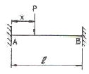
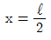
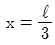
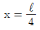
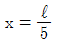
(정답률: 42%)
3. 그림과 같은 강봉이 2개의 다른 정사각형 단면적을 가지고 하중 P를 받고 있을 때 AB가 1500kg/cm2의 응력(Nomal stress)을 가지면 BC에서의 응력은 얼마인가?
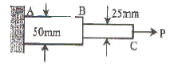
- 1500kg/cm2
- 3000kg/cm2
- 4500kg/cm2
- 6000kg/cm2
(정답률: 71%)
4. 다음 부정정 보 C점에서 BC 부재에 모멘트가 분배되는 분배율의 값은?
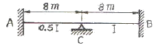
- 2/3
- 2/4
- 3/4
- 1/4
(정답률: 60%)
5. 균일한 단면을 가진 그림과 같은 단순보에서 Awl점의 처짐각은? (단, 탄성계수와 단면2차 모멘트는 각각 EI이다.)
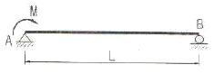
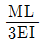
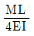
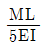
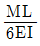
(정답률: 52%)
6. 그림과 같은 트러스의 상현재 U의 부재력은?
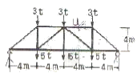
- 인장을 받으며 그 크기는 16t 이다.
- 압축을 받으며 그 크기는 16t 이다.
- 인장을 받으며 그 크기는 12t 이다.
- 압축을 받으며 그 크기는 12t 이다.
(정답률: 48%)
7. 그림과 같은 라멘에서 휨모멘트도(B.M.D)가 옳게 그려진 것은?
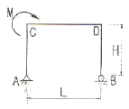
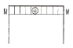
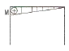
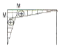
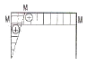
(정답률: 62%)
8. 그림과 같은 단면에 1500kg의 전단력이 작용할 때 최대 전단응력의 크기는?
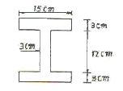
- 35.2kg/cm2
- 43.6kg/cm2
- 49.8kg/cm2
- 56.4kg/cm2
(정답률: 84%)
9. 다음 내민보에서 B지점의 반력 RB의 크기가 집중하중 300kg과 같게 하기 위해서는 L1의 길이는 얼마이어야 하는가?
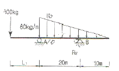
- 0m
- 5m
- 10m
- 20m
(정답률: 69%)
10. 아래 그림과 같은 불규칙한 단면의 A-A축에 대한 단면 2차모멘트는 35×106mm4이다. 만약 단면의 총 면적 이다. 만약 단면의 총 면적이 1.2×104mm2 이라면, B-B 축에 대한 단면2차모멘트는 얼마인가? (단, D-D축은 단면의 도심을 통과한다.)
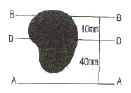
- 15.8×106mm4
- 17×106mm4
- 17×105mm4
- 15.8×105mm4
(정답률: 62%)
11. 그림과 같이 길이 20m인 단순보의 중앙점 아래 1cm 떨어진 곳에 지점 C가 있다. 이 단순보가 등분포하중 ω=1t/m를 받는 경우 지점 C의 수직반력 Rcy는? (단, EI=2.0×1012kg∙cm2 이다.)
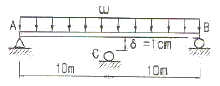
- 200 kg
- 300 kg
- 400 kg
- 500 kg
(정답률: 55%)
12. 그림과 같이 변의 길이가 20cm인 정사각형 단면을 가진 기둥에서 X-X축에 대한 회정반경 rx는 얼마인가?
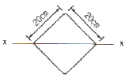
- 15.334 cm
- 10.564cm
- 8.334cm
- 5.774cm
(정답률: 58%)
13. 지름 2cm의 강봉(鋼棒)에 10t의 축방향 인장력을 작용시킬 때 이 강봉은 얼마만큼 가늘어 지는가? (단, 프와송(Poisson)비v=1/3, E=2,100,000kg/cm2)
- 0.0010 cm
- 0.0074 cm
- 0.0224 cm
- 0.0648 cm
(정답률: 71%)
14. 그림과 같은 구조물에서 B점의 휨모멘트 크기는?
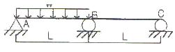
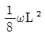
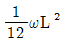
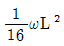
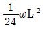
(정답률: 54%)
15. 그림과 같은 30° 경사진 언덕에서 4t의 물체를 밀어 올리는데 얼마 이상의 힘이 필요한가? (단, 마찰계수는 0.25이다.)
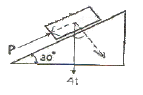
- 2.57 t
- 2.87 t
- 3.02 t
- 4 t
(정답률: 52%)
16. 다음 그림과 같은 보에서 휨모멘트에 의한 탄성변형 에너지를 구한 값은?
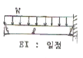
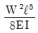
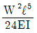
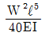
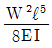
(정답률: 77%)
17. 그림의 보에서 G는 힌지(hinge)이다. 지점 B에서의 휨모멘트가 옳게 된 것은?
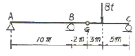
- -10t∙m
- +20t∙m
- -40t∙m
- +50t∙m
(정답률: 65%)
18. 상하단이 고정인 기둥에 그림과 같이 힘 P가 작용한다면 반력 RA, RB값은?(오류 신고가 접수된 문제입니다. 반드시 정답과 해설을 확인하시기 바랍니다.)
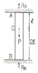
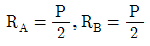
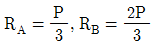
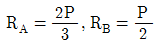
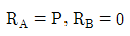
(정답률: 64%)
19. 그림 (a)와 (b)의 중앙점의 처짐이 같아지도록 그림 (b)의 등분포하중 w를 그림 (a)의 하중 P의 함수로 나타내면 얼마인가? (단, 재료는 같다.)
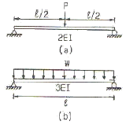
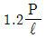
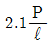
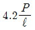
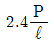
(정답률: 65%)
20. 다음 그림과 같은 장주의 최소 좌굴하중을 옳게 나타낸 것은?
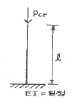
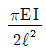
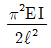
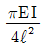
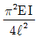
(정답률: 83%)
2과목: 측량학
21. 직사각형의 가로, 세로가 그림과 같다. 면적 A를 가장 적절히(오차론적으로) 표현한 것은?
- 7500m2±0.37m2
- 7500m2±0.47m2
- 7500m2±0.57m2
- 7500m2±0.67m2
(정답률: 70%)
22. 항공사진의 특수 3점 중 경사각에 관계 없이 연직사진의 축척과 같은 축척이 되는 점은 무엇인가?
- 주점
- 연직점
- 등각점
- 자침점
(정답률: 29%)
23. 축척 1/50,000 의 지형도에서 경사가 10%인 등경사선의 주곡선간 도상거리는?
- 2mm
- 4mm
- 6mm
- 8mm
(정답률: 67%)
24. P점의 표고를 구하기 위하여 4개의 기지점 A, B, C, D에서 왕복수준측량의 결과가 다음과 같다. P점의 최학값은?(문제 오류로 보기 내용이 다 같습니다. 정확한 보기 내용을 아시는 분께서는 오류 신고를 통하여 내용작성 부탁 드립니다. 정답은 1번입니다.)
- 34.516m
- 34.929m
- 35.654m
- 35.967m
(정답률: 70%)
25. 표고가 500m인 관측점에서 표고가 700m인 목표점까지의 경사거리를 측정한 결과가 2545m 였다면 평균해면상의 거리는? (단, 지구의 곡선 반지름=6370km)
- 2537.14m
- 2466.26m
- 2466.06m
- 2536.94m
(정답률: 27%)
26. 도로측량에서 원곡선을 설치할 때 중심선의 반지름이 400m이고, 차량전면에서 뒷축까지 거리가 12m일 때, 곡선부에 설치하는 확폭(slack widening)의 량은 얼마인가?
- 0.03m
- 0.18m
- 0.36m
- 0.72m
(정답률: 50%)
27. 다음 축척에 대한 설명 중 옳은 것은?
- 축척 1/500 도면상 면적은 실제면적의 1/1000 이다.
- 축척 1/600의 도면을 1/200로 확대했을 때 도면의 크기는 3배가 된다.
- 축척 1/300 도면상 면적은 실제면적의 1/9000 이다.
- 축척 1/500인 도면을 축척 1/1000로 축소했을 때 도면의 크기는 1/4 이 된다.
(정답률: 68%)
28. 다음 표정에 대한 설명으로 옳지 않은 것은?
- 절대표정은 대지표정이라고도 하며 축척의 결정, 수준면의 결정, 위치의 결정으로 나누어진다.
- 내부표정이란 도화기의 투영기에 촬영 당시와 똑같은 상태로 양화건판을 장착시키는 작업을 말한다.
- 접합표정은 한쌍의 입체사진 내에서 서로 대응되는 모형을 접합시켜 한 공통된 좌표계로 접합시키는 표 정법을 말한다.
- 상호표정이란 투영기에서 나오는 광속이 촬영당시 촬영면상에 이루어지는 횡시차를 소거하여 목표 지형물의 상대적 위치를 맞추는 작업을 말한다.
(정답률: 38%)
29. 삼각측량을 하여 α=54° 25′ 32″, β=68° 43′ 23″ γ=56° 51′ 14″각의 각조건에 의한 조정량은 몇 초인가?
- -4″
- -3″
- +4″
- +3″
(정답률: 69%)
30. 노선에 있어서 곡선의 반경만이 2배로 증가하면 캔트(cant)의 크기는?
- 1/√2로 줄어든다.
- 1/2로 줄어든다.
- 1/22로 줄어든다.
- 2배로 증가한다.
(정답률: 65%)
31. 삼각수준측량에서 1/25,000의 정확도로 수준차를 허용할 경우 지구의 곡률을 고려하지 않아도 되는 시준거리는? (단, 공기의 굴절계수 K=0.14, 지구반경 R=6370km)
- 593m
- 693m
- 793m
- 893m
(정답률: 50%)
32. 사진상의 두 점 AB의 거리가 19.92cm, 1/50,000 지도상의 AB 거리가 8.36cm일 때 이 사진의 비행고도는 얼마인가?
- 1126m
- 2420m
- 3126m
- 3420m
(정답률: 29%)
33. 한점 A에서 다각측량을 실시하여 A점에 돌아왔더니 위거 오차 30 cm, 경거 오차 40 cm 였다. 다각측량의 전길이가 500m 일 때 이 다각형의 폐합오차와 폐합비는?
- 폐합오차 0.⑤5 m, 폐합비 1/100
- 폐합오차 0.5 m, 폐합비 1/1000
- 폐합오차 0.⑤ m, 폐합비 1/1000
- 폐합오차 0.5 m, 폐합비 1/100
(정답률: 87%)
34. 축척 1/500 지형도를 기초로 하여 축척 1/30,000 지형도를 제작 하고자 한다. 1/3,000 도면 한 장에는 1/500 도면이 얼마나 포함되는가?
- 25매
- 16매
- 36매
- 49매
(정답률: 86%)
35. 축척 1/3,000의 도면에서 면적을 관측한 결과 2,450m2이 었다. 그런데 도면의 가로와 세로가 각각 1%씩 줄어 있었다면 실제 면적은?
- 2,485m2
- 2,500m2
- 2,558m2
- 2,588m2
(정답률: 42%)
36. 삼각측량 성과표에 나타나는 삼각점간의 거리는?
- 기준회전타원체면상에 투영한 거리
- 지표면을 따라 측정한 거리
- 2점간의 직선거리
- 2점의 위도차에 상응하는 자오선상의 거리
(정답률: 45%)
37. 그림과 같은 공사측량을 하고자 할 때 접선길이 AI로 부터 HC 를 구하면 얼마인가? (단, α=20°, ∠AHC=90°, R=50m임)
- 0.19 m
- 1.98 m
- 3.02 m
- 3.24 m
(정답률: 49%)
38. 홍수시 유속측정에 가장 알맞은 것은?
- 봉부자
- 이중부자
- 유속부자
- 표면부자
(정답률: 69%)
39. 미지점에 평판을 세우고 도상에서 그 점의 위치를 구할 때 사용되는 측량방법은?
- 방사법
- 전방교회법
- 후방교회법
- 계선법
(정답률: 77%)
40. 삼각수준측량의 관측값에서 대기의 굴절오차(기차)와 지구의 곡률오차(구차)의 조정방법중 옳은 것은?
- 기차는 높게, 구차는 낮게 조정한다.
- 기차는 낮게, 구차는 높게 조정한다.
- 기차와 구차를 함께 높이 조정한다.
- 기차와 구차를 함께 낮게 조정한다.
(정답률: 54%)
3과목: 수리학 및 수문학
41. Darcy의 법칙 중 지하수의 유속에 대한 설명으로 옳은 것은?
- 수온(水溫)에 비례한다.
- 수심(水深)에 비례한다.
- 영향권의 반지름에 비례한다.
- 동수경사(動水傾斜)에 비례한다.
(정답률: 60%)
42. 유체가 흐를 때 Reynolds 수가 커지면 물체의 후면에 후류(wake)라는 소용돌이가 생긴다. 이 때 압력이 저하되어 물체를 흐름방향과 반대방향으로 잡아당기는 저항은?
- 마찰저항
- 형상저항
- 부유저항
- 조파저항
(정답률: 30%)
43. 수문에 관련한 용어에 대한 설명 중 옳지 않은 것은?
- 증발이란 액체상태의 물이 기체상태의 수증기로 바뀌는 현상이다.
- 증산(transpiration)이란 식물의 엽면(葉面)을 통해 물이 수증기의 형태로 대기 중에 방출 되는 현상이다.
- 침투란 토양면을 통해 스며든 물이 중력에 의해 계속 지하로 이동하여 불투수층까지 도달하는 것이다.
- 강수(precipitation)란 구름이 응축되어 지상으로 떨어지는 모든 형태의 수분을 총칭한다.
(정답률: 64%)
44. 유역의 평균강우량을 구하는 방법이 아닌 것은?
- 산술평균법
- Thiessen 법
- 등우선법
- DAD 해석법
(정답률: 66%)
45. 다음 중 Snyder 방법에 의한 단위유량도 합성방법의 결정요소(매개변수)와 거리가 먼 것은?
- 산술평균법
- Thiessen 법
- 등우선법
- DAD 해석법
(정답률: 29%)
46. 과정 위어(weir)의 유량공식 에 사용되는 수두(H)는?
- h1
- h2
- h3
- h4
(정답률: 55%)
47. 그림과 같이 길이 5m인 원기둥(비중 0.6)을 수중에 수직으로 띄웠을 때, 원기둥이 전도되지 않도록 하는데 필요한 지름의 범위로 옳은 것은?
- 2 m 이상
- 4 m 이상
- 7 m 이상
- 9 m 이상
(정답률: 49%)
48. 다음에서 배수곡선(背水曲線)이 생기는 영역(領域)은?
- h ＞ ho ＞ hc
- h ＜ ho ＜ hc
- ho ＞ hc ＞ h
- hc ＜ h ＜ ho
(정답률: 57%)
49. 지름이 20cm, 길이가 1.0m인 관에서 수두손실이 20cm일 때 관벽에 작용하는 마찰력 (τ)은?
- 0.1g/cm2
- 0.2g/cm2
- 1.0g/cm2
- 2.0g/cm2
(정답률: 57%)
50. 그림에서 A와 B의 압력차는? (단, 수은의 비중은 13,50임)
- 0.638t/m2
- 6.750t/m2
- 6.250t/m2
- 0.689/m2
(정답률: 54%)
51. 비중 r1의 물체가 비중 r2(r2＞r1)의 액체에 떠 있다. 액면 위의 부피(V1)과 액면 아래의 부피(V2) 비 (V1/V2)는?
(정답률: 68%)
52. 지름 20cm의 원형단면 수로를 물이 가득차서 흐를 때의 동수반경(R)은?
- 5 cm
- 10 cm
- 15 cm
- 20 cm
(정답률: 76%)
53. 피압 지하수를 설명한 것으로 옳은 것은?
- 지하수와 공기가 접해있는 지하수면을 가지는 지하수
- 두 개의 불투수층 사이에 끼어 있는 지하수면이 없는 지하수
- 하상 밑의 지하수
- 한 수원이나 조직에서 다른 지역으로 보내는 지하수
(정답률: 72%)
54. 오리피스의 수축계수와 그 크기로 옳은 것은? (단, a0는수축단면, a는 오리피스단면적, Va는수축 단면의유속, V는이론유속이다.)
(정답률: 65%)
55. 다음의 설명 중 옳지 않은 것은? (단, ℓ관의총길이, D=관의지름)
- 관수로에서 마찰 이외의 손실수두를 무시할 수 있는 경우는 ℓ/D＞3000 이다.
- 마찰손실 수두는 모든 손실수드 가운데 가장 큰 것으로 마찰손실 계수에 유속수두를 곱한 것과 같다.
- 관수로의 출구 손실계수는 보통 1로 본다.
- 관수로 내의 손실수두는 유속수두에 비례한다.
(정답률: 67%)
56. 단위도(단위 유량도)에 대한 설명으로 옳지 않은 것은?
- 단위도의 3가정은 일정기저기간, 가정, 비례 가정, 중첩가정이다.
- 단위도는 기저유량과 직접유출량을 포함하는 수문곡선이다.
- S-Curve를 이용하여 단위도의 단위시간을 변경할 수있다.
- Snyder는 합성단위도법을 연구 발표하였다.
(정답률: 54%)
57. 다음 중 유효유량과 가장 관계가 깊은 것은?
- 직접유출
- 기저유출
- 중간유출
- 지표하유출
(정답률: 56%)
58. 베르누이(Bernoulli)의 정리에 관한 설명 중 옳지 않은 것은?
- 부정류(不定流)라고 가정하여 얻은 결과이다.
- 하나의 유선(流線)에 대하여 성립된다.
- 하나의 유선에 대하여 총에너지는 일정하다.
- 두 단면 사이에 있어서 외부와 에너지 교환이 없다고 가정한 것이다.
(정답률: 44%)
59. 수리학적으로 가장 유리한 단면에 대한 설명으로 틀린 것은?
- 수로의 경사, 조도계수, 단면이 일정할 때 최대유량을 통수시키게 하는 가장 경제적인 단면이다.
- 동수반경이 최소일 때 유량이 최대가 된다.
- 최적 수리단면에서는 직사각형(구형) 수로단면이나 사다리꼴(제형) 수로단면 모두 동수반경이 수심의 절반이 된다.
- 기하학적으로는 반원 단면이 최적 수리단면이나 시공상의 이유로 직사각형(구형)단면 또는 사다리꼴(제형) 단면이 사용된다.
(정답률: 46%)
60. 개수로의 지배단면(Control Section)에 대한 설명으로 옳은 것은?
- 개수로 내에서 유속이 가장 크게 되는 단면이다.
- 개수로 내에서 압력이 가장 크게 작용하는 단면이다.
- 개수로 내에서 수로경사가 항상 같은 단면을 말한다.
- 한계수심이 생기는 단면으로서 상류에서 사류로 변하는 단면을 말한다.
(정답률: 64%)
4과목: 철근콘크리트 및 강구조
61. 경간이 8m인 직사각형 PSC보(b= 300mm, h= 500mm)에 계수하중 w= 40kN/m가 작용할 때 인장측의 콘크리트 응력이 0이 되려면 얼마의 긴장력으로 PS강재를 긴장해야 하는가? (단, PS강재는 콘크리트 단면도상에 배치되어 있음)
- P= 1250 kN
- P= 1880 kN
- P= 2650 kN
- P= 3840 kN
(정답률: 65%)
62. 압축철근비가 0.01이고, 인장철근비가 0.003인 철근콘크리보에서 장기 추가처짐에 대한 계수 (λ)의 값은?
- 0.80
- 0.933
- 2.80
- 1.333
(정답률: 64%)
63. 계수전단력 Vu58kN에 대하여 콘크리트구조설계기준의 규정에 의한 최소 전단철근을 배근하여야 하는 직사각형 철근콘크리트보가 있다. 이 보의 폭이 250mm 일 경우 유효깊이(d)의 최소값은 얼마인가? (단, fck=21MPa, fy=300MPa이고 전단력을받는부재에대한강도감소계수 ( ) 는 075를적용한다.)
) 는 075를적용한다.)
- 314 mm
- 376 mm
- 4⑤ mm
- 449 mm
(정답률: 59%)
64. 다음의 뒷 부벽식옹벽에 표시된 철근은?
- 인장철근
- 배력근
- 보조철근
- 복철근
(정답률: 41%)
65. 철근콘크리트 부재의 비틀림철근 상세에 대한 설명으로 틀린 것은? (단, ph : 가장바깥의횡방향폐쇄스터럽중심선의둘레(㎜))
- 종방향 비틀림철근은 양단에 정착하여야 한다.
- 횡방향 비틀림철근의 간격은 ph/4 보다 작아야 하고 또한 200 mm 보다 작아야 한다.
- 비틀림에 요구되는 종방향 철근은 폐쇄스터럽의 둘레를 따라 300 mm 이하의 간격으로 분포시켜야 한다.
- 종방향 철근의 지름은 스터럽 간격의 1/24 이상이어야 하며, D10 이상의 철근이어야 한다.
(정답률: 60%)
66. 단면에 계수비틀림모멘트 Tu=18kN∙m가 작용하고 있다. 이 비틀림모멘트에 요구되는 스터럽의 요구단면적은? (단, fck=21MPs이고, 횡방향 철근의 설계기준항복강도 fyt=350MPa, s는 종방향 철근에 나란히 방향의 스터럽 간격, At는 간격 S내의 비틀림에 저항하는 폐쇄스터럽 1가닥의 단면적이고, 비틀림에 대한 강도감소계수 ( )는 0.75를 사용한다.)
)는 0.75를 사용한다.)
(정답률: 52%)
67. 강도설계법에서 강도감소계수를 사용하는 이유에 대한 설명으로 잘못된 것은?
- 재료의 공칭강도와 실제 강도와의 차이를 고려하기 위해
- 부재를 제작 또는 시공할 때 설계도와의 차이를 고려하기 위해
- 하중의 공칭값과 실제 하중 사이의 불가피한 차이를 고려하기 위해
- 부재 강도의 추정과 해석에 관련된 불확실성을 고려하기 위해
(정답률: 56%)
68. 철근의 부착강도에 영향을 주는 요인이 아닌 것은?
- 철근의 표면 상태
- 철근의 인장강도
- 콘크리트 압축강도
- 철근의 피복두께
(정답률: 43%)
69. 아래 그림의 지그재그로 구멍이 있는 판에서 순폭을 구하면? (단, 리벳구멍직경=25mm)
- bn=187㎜
- bn=150㎜
- bn=141㎜
- bn=125㎜
(정답률: 62%)
70. 경간이 12m인 대칭 T형보에서 슬래브 중심 간격이 2.0m, 플랜지의 두께가 300mm, 복부의 폭이 400mm일 때 플랜지의 유효폭은?
- 3000mm
- 2000mm
- 2500mm
- 5200mm
(정답률: 63%)
71. PS콘크리트의 강도개념(strength concept) 을 설명한 것으로 가장 적당한 것은?
- 콘크리트에 프리스트레스가 가해지면 PSC부재는 탄성 재료로 전환되고 이의 해석은 탄성이론으로 가능하다는 개념
- PSC 보를 RC 보처럼 생각하여, 콘크리트는 압축력을 받고 긴장재는 인장력을 받게 하여 두 힘의 우력모멘트로 외력에 의한 휨모멘ㅌ트에 저항시킨다는 개념
- PS콘크리트는 결국 부재에 작용하는 하중의 일부 또는 전부를 미리 가해진 프리스트레스와 평행이 되도록 하는 개념
- PS콘크리트는 강도가 크기 때문에 보의 단면을 강재의 단면으로 가정하여 압축 및 인장을 단면전체가 부담할 수 있다는 개념
(정답률: 61%)
72. 철근콘크리트보의 파거거동 내용 중 잘못된 것은?
- 규정에 의한 최소 철근량보다(As,min) 매우 적은 철근량이 배근된 경우 인장부 콘크리트 응력이 파괴계수에 도달하면 균열과 동시에 취성파괴를 일으킨다.
- 과소철근으로 배근된 단면에서는 최종 붕괴가 생길때 까지 큰 처짐이 생긴다.
- 과다철근으로 배근된 단면에서는 압축측 콘크리트의 변형률이 0.003에 도달할 때 인장철근의 응력은 항복응력 보다 작다.
- 인장철근이 항복응력 fy에 도달함과 동시에 콘크리트 압축변형률 0.003에 도달하도록 설계하는 것이 경제적이고 바람직한 설계이다.
(정답률: 25%)
73. 다음 그림의 고장력 볼트 마찰이음에서 필요한 볼트 수는 최소 몇 개인가?
- 3개
- 5개
- 6개
- 8개
(정답률: 47%)
74. 복철근 보에서 압축철근에 대한 효과를 설명한 것으로 적절하지 못한 것은?
- 단면 저항 모멘트를 크게 증대시킨다.
- 지속하중에 의한 처짐을 감소시킨다.
- 파괴시 압축 응력의 깊이를 감소시켜 연성을 증대시킨다.
- 철근의 조립을 쉽게한다.
(정답률: 65%)
75. 나선철근 기둥의 설계에 있어서 나선철근비를 구하는 식으로 옳은 것은?
(정답률: 50%)
76. 그림과 같은 단철근 직4각형 보를 강도설계법으로 해석 할 때 콘크리트의 등가 직4각형의 깊이 a는? (여기서, fck=21MPa. fy=300MPa)
- a= 104mm
- a= 94mm
- a= 84mm
- a= 74mm
(정답률: 58%)
77. 철근콘크리트 벽체의 철근배근에 대한 다음 설명 중 잘못된 것은?
- 동일 조건에서 최소 수직철근비가 최소 수평철근비보다 크다.
- 지하실을 제외한 두께 250mm 이상의 벽체에 대해서는 수직 및 수평철근을 벽면에 평행하게 양면으로 배치 하여야 한다.
- 수직철근이 집중배치된 벽체부분의 수직철근비가 0.01배 미만인 경우에는 횡방향 띠철근을 설치하지 않을수 있다.
- 수직철근이 집중배치된 벽체부분에서 수직철근이 압축력을 받는 철근이 아닌 경우에는 횡방향 띠철근을 설치 할 필요가 없다.
(정답률: 49%)
78. 프리스트레스트 콘크리트 구조물의 특징에 대한 설명으로 틀린 것은?
- 철근콘크리트의 구조물에 비해 진동에 대한 저항성이 우수하다.
- 설계하중에서 균열이 생기지 않으므로 내구성이 크다.
- 철근콘크리트 구조물에 비하여 복원성이 우수하다.
- 공사가 복잡하여 고도의 기술을 요한다.
(정답률: 79%)
79. 그림과 같은 맞대기 용접의 용접부에 생기는 인장응력은 얼마인가?
- 50 MPa
- 70.7 MPa
- 100 MPa
- 141.4 MPa
(정답률: 50%)
80. 단철근 직사각형보의 폭이 300mm, 유효깊이가 500mm, 높이가 600mm일때, 외력에 의해 단면에서 휨균열을 일으키는 휨모멘트(Mcr)을 구하면?
- 45.2 kN∙m
- 48.9 kN∙m
- 52.1 kN∙m
- 55.6 kN∙m
(정답률: 32%)
5과목: 토질 및 기초
81. 다음의 지반개량공법 중 압밀배수를 주로하는 공법이 아닌 것은?
- 프리로딩공법
- 샌드레인공법
- 진공압밀공법
- 바이브로 플로테이션공법
(정답률: 64%)
82. 그림과 같은 모래층에 널말뚝을 설치하여 물막이공 내의 물을 배수하였을때, 분사현상이 일어나지 않게 하려면 얼마의 압력을 가하여야 하는가?
- 6.5t/m2
- 13t/m2
- 33t/m2
- 16.5t/m2
(정답률: 49%)
83. 표준관입시험에 관한 시험 중 옳지 않은 것은?
- 표준관입시험의 N값으로 모래지반의 상대밀도를 추정할 수 있다.
- N값으로 점토지반의 연견도에 관한 추정이 가능하다.
- 지층의 변화를 판단할 수 있는 시료를 얻을 수 있다.
- 모래지반에 대해서도 흐트러지지 않은 시료를 얻을 수 있다.
(정답률: 77%)
84. 직접전단 시험을 한 결과 수직응력이 12kg/cm2일 때 전단저항이 5kg/cm2, 또 수직응력이 24kg/cm2일 때 전단 저항이 7kg/cm2이었다. 수직응력이 30kg/cm2일 때의 전단저항은 약 얼마인가?
- 6kg/cm2
- 8kg/cm2
- 10kg/cm2
- 12kg/cm2
(정답률: 54%)
85. 흙속에 있는 한 점의 최대 및 최소 주응력이 각각 2.0kg/cm2 및 1.0kg/cm2일 때 최대 주응력면과 30°를 이루는 평면상의 전단응력을 구한 값은?
- 0.1⑤kg/cm2
- 0.215kg/cm2
- 0.323kg/cm2
- 0.433kg/cm2
(정답률: 56%)
86. 현장 흙의 모래치환법에 의한 밀도시험을 한 결과 파낸 구멍의 부피는 2000cm3이고 파낸 흙의 줄양이 3240g이며 함수비는 8%였다. 이 흙의 간극비는 얼마인가? (단, 이 흙의 비중은 2.70 이다.)
- 0.80
- 0.76
- 0.70
- 0.66
(정답률: 59%)
87. 아래 그림과 같은 흙의 3상도에서 흙입자만의 부피 (Vs)는 얼마나 되겠는가? (단, 흙의 비중은 2.65이고, 함수비는 25%이다.)
- 2.40m3
- 2.72m3
- 3.12m3
- 3.40m3
(정답률: 47%)
88. 무게 3 ton인 단동식 증기 hammer를 사용하여 낙하고 1.2m에서 pile을 타입할 때 1회 타격당 최종 침하량이 2cm이었다. Engineering News 공식을 사용하여 허용 지지력을 구하면 얼마인가?
- 13.3t
- 26.7t
- 80.8t
- 160t
(정답률: 76%)
89. 그림과 같은 지반에서 하중으로 인하여 수직응력 (△σ1)이 1.0kg/cm2이 증가되고 수평응력 (△σ3)이 0.5lg/cm2이 증가되었다면 간극수압은 얼마나 증가되었는가?
- 0.50kg/cm2
- 0.75kg/cm2
- 1.00kg/cm2
- 1.25kg/cm2
(정답률: 52%)
90. 토목 섬유의 주요기능 중 옳지 않은 것은?
- 보강(Reinforcement)
- 배수(Drainge)
- 탬핑(Damping)
- 분리(Separation)
(정답률: 74%)
91. 그림과 같은 옹벽배면에 작용하는 토압의 크기를 Rankine의 토압공식으로 구하면?
- 3.2t/m
- 3.7t/m
- 4.7t/m
- 5.2t/m
(정답률: 52%)
92. 굳은 점토지반에 앵커를 그라우팅하여 고정시켰다. 고정부의 길이가 5m, 직경 20cm, 시추공의 직경은 10cm 이었다. 점토의 비배수전단강도 (Cu)=1.0kg/cm2, =0°이라고 할때 앵커의 극한 지지력은? (단, 표면마찰계수는 0.6으로 가정한다.)
- 9.4ton
- 15.7ton
- 18.8ton
- 31.3ton
(정답률: 54%)
93. 사면안정계산에 있어서 Fellenius법과 간편 Bishop법의 비교 설명 중 틀린 것은?
- Fellenus법은 절편의 양쪽에 작용하는 합력은 0(zero) 이라고 가정한다.
- 간편 Bishop법은 절편의 작용하는 연직 방향의 합력은 0(zero)이라고 가정한다.
- Fellenius법은 간편 Bishop법보다 계산은 복잡하지만 계산결과는 더 안전측이다.
- 간편 Bishop법은 안전율을 시행착오법으로 구한다.
(정답률: 66%)
94. 포화단위중량이 1.8t/m3인 흙에서의 한계동수경사는 얼마인가?
- 0.8
- 1.0
- 1.8
- 2.0
(정답률: 54%)
95. 통일분류법(統一分類法)에 의해 SP로 분류된 흙의 설명으로 옳은 것은?
- 모래질 실트를 말한다.
- 모래질 점토를 말한다.
- 압축성이 큰 모래를 말한다.
- 입도분포가 나쁜 모래를 말한다.
(정답률: 80%)
96. 수직방향의 투수계수가 4.5×10-8m/sec이고, 수평방향의 투수계수가 1.6×10-8m/sec인 균질하고 비등방(非等方)인 흙댐의 유선망을 그린 결과 유로(流路)수가 4개이고 등수두선의 간격수기 18개 이었다. 단위길이(m)당 침투수량은? (단, 댐의 상하류의 수면의 차는 18m이다.)
- 1.1×10-7m3/sec
- 2.3×10-7m3/sec
- 2.3×10-8m3/sec
- 1.5×10-8m3/sec
(정답률: 68%)
97. 다음 그림과 같은 Sampler에서 면적비는 얼마인가?
- 5.97%
- 14.62%
- 5.80%
- 14.80%
(정답률: 58%)
98. 그림에서 A점의 유효응력 σ′ 을 구하면?
- σ′=4.0t/m2
- σ′=4.5t/m2
- σ′=5.4t/m2
- σ′=5.8t/m2
(정답률: 43%)
99. 투수성 토층사이에 두께 7m의 점토층이 끼어 있다. 이와 같은 지반위에 구조물을 축조하니 압밀현상이 일어났으며 이 때의 압밀계수는 6.4×10-4cm2/sec이었다. 이 구조물의 침하량이 최종침하량의 50%에 달하는데 요하는 시간은?
- 365일
- 437일
- 550일
- 613일
(정답률: 62%)
100. 다짐 시험에서 동일한 다짐에너지(conpactive effort)를 가했을 때 건조밀도가 큰 것에서 작아지는 순서로 되어 있는 것은?
- SW＞ML＞CH
- SW＞CH＞ML
- CH＞NL＞SW
- ML＞CH＞SW
(정답률: 53%)
6과목: 상하수도공학
101. 수원 선정시 고려할 사항 중 옳지 않은 것은?
- 최대 강수기에도 계획수량이 확보될 수 있어야 한다.
- 수질이 양호하여 경제적인 정수가 가능해야 한다.
- 수돗물 소비지와 멀리 떨어져 수질을 확보해야 한다.
- 건설비 및 유지관리비가 경제적이어야 한다.
(정답률: 66%)
102. 하수관거의 관정부식(crown corrosion)의 주된 원인이 되는 물질은?
- N 화합물
- S 화합물
- Ca 화합물
- Fe 화합물
(정답률: 48%)
103. 정수시설 중 완속여과지의 모래층 두께는 얼마를 표준으로 하는가?
- 5~10cm
- 30~50cm
- 70~90cm
- 150~200cm
(정답률: 62%)
104. 하수처리장의 1차 처리시설에서 BOD부하의 40%가 제거되고 2차 처리시설에서 BOD부하의 90%가 제거되었다면 전체 BOD 제거율은?
- 78%
- 89%
- 94%
- 96%
(정답률: 62%)
1⑤. 하수관거의 설계사항 중 적합하지 않는 것은?
- 오수관거는 계획시간최대오수량에 대하여 유속을 최소 0.6m/s, 최대 3.0m/s로 한다.
- 우수관거 및 합류관거는 계획우수량에 대하여 유속을 최소 0.8m/s, 최대 3.0m/s로 한다.
- 오수관거의 최소관경은 300mm를 표준으로 한다.
- 우수관거 및 합류관거의 최소관경은 250mm를 표준으로 한다.
(정답률: 78%)
106. 용존산소 부족곡선(DO sag Curve)에서 산소의 복귀율(회복속도)이 최대로 되었다가 감소하기 시작하는 점은?
- 임계점
- 변곡점
- 오염 직후 점
- 포화 직전 점
(정답률: 72%)
107. SVI에 대한 다음 설명 중 잘못된 것은?
- 활성슬러지의 침강성을 나타내는 지표이다.
- SVI가 100 전후로 활성슬러지의 침강성이 양호한 경우 에는 일반적으로 압밀침강에 해당 된다.
- SVI가 적을수록 슬러지가 농축되기 쉽다.
- SVI가 높아지면 MLSS도 상승한다.
(정답률: 53%)
108. 슬러지 농축과정에서 99% 함수율의 슬러지를 함수율 90%로 농축하였다. 단위중량이 같다고 할 때 농축 후 슬러지 부피는 농축 전 슬러지 부피의몇 % 이겠는가?
- 4%
- 5%
- 9%
- 10%
(정답률: 53%)
109. 처리수량이 6,000m3/day정수장에서 염소를 6mg/L의 농도로 주입한다. 잔류염소 농도가 0.2mg/L 이었다면 염소 요구량은? (단, 염소의 순도는 75% 이다.)
- 36.6 kg/day
- 46.4 kg/day
- 100.1 kg/day
- 480.4 kg/day
(정답률: 47%)
110. 하수 관거의 접합에 관한 설명 중 잘못된 것은?
- 수면접합은 수리학적으로 대개 계획수위를 일치시켜 접합시키는 것으로서 양호한 방법이다.
- 관정접합은 굴착깊이가 증가됨으로 공사비가 증대되는 단점이 있다.
- 지표의 경사가 급한 경우 지표경사에 따라서 단차접합 또는 게단접합을 한다.
- 두 개의 관거가 합류하는 경우 중심교각은 90°이상으로 한다.
(정답률: 63%)
111. 하수관거의 계획하수량을 결정할 때의 고려사항으로 잘못된 것은?
- 우수관거는 계획우수량으로 한다.
- 오수관거는 계획시간최대오수량으로 한다.
- 차집관거는 우천시 계획우수량으로 한다.
- 합류식 관거에서는 계획시간최대오수량에 계획우수량을 합한 것으로 한다.
(정답률: 70%)
112. 인구가 10,000 명인 A시에 폐수 배출시설 1개소가 있다. 이 폐수 배출시설의 유량은 200m3/day이고, 평균 BOD배출량이 500g/m3이다. 마약 Atl에 하수종말 처리장을 건설한다면 게획인구수는? (단, 하수종말처리장 건설시 1인 1일 BOD 부하량은 50gBOD/인∙일로 한다.)
- 11,000 명
- 12,000 명
- 13,000 명
- 14,000 명
(정답률: 57%)
113. 계획 1일 최대급수량을 시설 기준으로 하지 않은 것은?
- 배수시설
- 정수시설
- 치수시설
- 송수시설
(정답률: 68%)
114. 자연 유하식과 비교할 때 압송식 하수도에 관한 내용과 가장 거리가 먼 것은?
- 관거의 매설깊이가 낮다.
- 하향식 경사를 필요로 하지 않는다.
- 유지관리가 비교적 간편하고 관거 점검이 용이하다.
- 지하수 등의 유입이 없다.
(정답률: 49%)
115. 하수의 배제방식 중 분류식 하수도에 대한 설명으로 틀린 것은?
- 우수관 및 오수관 구별이 명확하지 않는 곳에서는 오접의 가능성이 있다.
- 우천시에 수세효과가 있다.
- 우천시 월류의 우려가 없다.
- 청천시 월류의 우려가 없다.
(정답률: 66%)
116. 상수도 관망게산 방법 중 Hardy Cross법에서 가정 사항이 아닌 것은?
- 합류점에서 유입하는 유량은 그 점에게 일단 정지 후 유출된다.
- 각 폐합관에 대한 손실수두의 합은 0이다.
- 마찰 이외의 손실은 무시한다.
- 분기점에서 유입하는 유량은 그 점에 정지하지 않고 전부 유출한다.
(정답률: 56%)
117. A, B, C 세 정수장의 염소소독시 염소주입량의 잔류염소량의 관계가 그림과 같을 때 설명으로 옳지 않은 것은?
- A정수장의 염소 요구량이 가장 적다.
- B정수장의 물이 C정수장의 물보다더 많은 암모니아를 함유한다.
- B정수장에서 파괴점 염소소독을 행하려면 최소한 10mg/L 이상의 염소를 주입해야 한다.
- C정수장의 물에 15mg/L의 염소를 주입하면 다량의 클로라민이 생성된다.
(정답률: 45%)
118. 다음 하수량 산정에 관한 설명 중 틀린 것은?
- 계획오수량은 생활오수량, 공장폐수량 및 지하수량으로 구분된다.
- 계획오수량 중 지하수량은 1인1일최대오수량의 10~20%정도로 산정한다.
- 우수량의 산정공식중 합리식(Q=CIA)에서 I는 동수경사이다.
- 계획1일최대오수량은 처리시설의 용량을 결정하는데 기초가 된다.
(정답률: 72%)
119. 펌프의 규정토출량이 800∙/hr, 규정양정이 7m, 규정 회전수 1500rpm인 펌프의 비교회전도(Ns)는?
- 1173
- 1273
- 1373
- 1473
(정답률: 58%)
120. 펌프 산정시 고려사항으로 거리가 먼 것은?
- 펌프의 특성
- 펌프의 효율
- 펌프의 동력
- 펌프의 중량
(정답률: 75%)